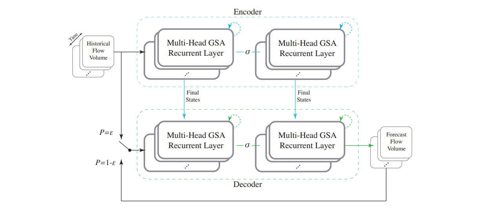

|
Hanwen Xu
Master Student Automation, Tsinghua University Email: xuhanwen[at] mails.tsinghua.edu.cn CV • Google Scholar • GitHub |
About
|
I am a second-year Master student in Bioinformatics Division. Department of Automation at Tsinghua University, supervised by Prof. Xiaowo Wang and an independent researcher at Paul G. Allen School of Computer Science & Engineering
University of Washington, Seattle, supervised by Prof. Sheng Wang.
Before that, I received my Bachelor's degree from the Department of Automation, Tsinghua University.
|
News
- NEW [November, 2021] Hanwen became the reviewer of RECOMB 2022!
- [November, 2021] Two first author paper submitted to RECOMB 2022.
- [May, 2021] Our ARIC paper was accepted by Briefings in Bioinformatics!
- [May, 2021] Our cfDNA Pipeline paper was accepted by Bioinformatics!
- [Spring, 2021] Independent research started at Prof. Sheng Wang's group!
- [February, 2021] Our S3 paper was accepted by UbiComp 2021!
- [August, 2020] I was arwarded the Outstanding Graduates and started my graduate study at Bioinformatics Division, Tsinghua University
- [November, 2019] I was awarded the National Scholarship 2019.
- [June, 2019] I started my internship in Computer Science, Purdue University!
- [June, 2019] Our transportation forecasting paper was accepted by 2019 IEEE Intelligent Transportation Systems Conference (ITSC)!
Research
|
ProTranslator: zero-shot protein function prediction using textual description |
PccGEO: prior constraints conditioned genetic elements optimization | |
ARIC: accurate and robust inference of cell type proportions from bulk gene expression | |
 |
Learning dynamic graph embedding for traffic flow forecasting: A graph self-attentive method |
S3: Side Channel Attack on Stylus Pencil Through Sensors | |
cfDNApipe: A comprehensive quality control and analysis pipeline for cell-free DNA high-throughput sequencing data |

Selected Awards
- The Scholarship for Comprehensive Outstanding Performance of Graduate Students, 2021.
- Outstanding Graduates (Beijing, Tsinghua University & Dept. of Automation), 2020.
- National Scholarship, Tsinghua University, 2019.
- Innovation Award of Science and Technology, Tsinghua University, 2019.
Miscellaneous
|
I like running! I have been insisted on the 5 km running everyday for one year! I can finish the 3 km running in 11'30 minutes, 5 km running in 21 minutes, and 10 km running in 46 minutes! Begin running with me, we can have a better life! |
Hanwen Xu Last updated: November, 2021